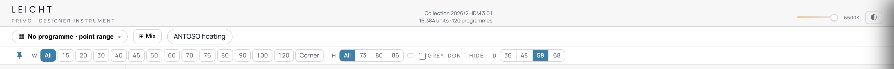
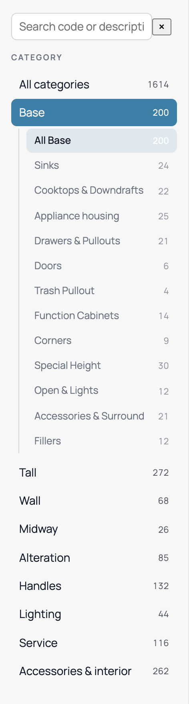
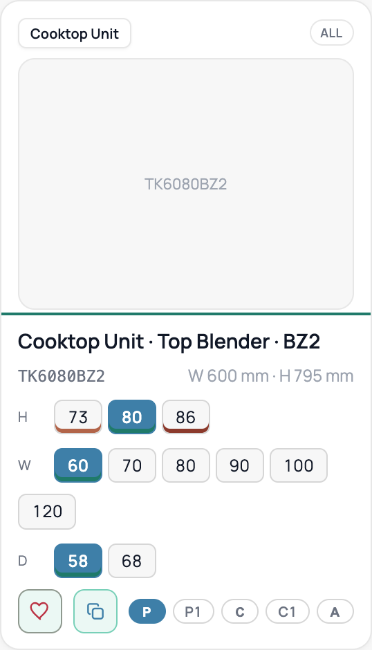
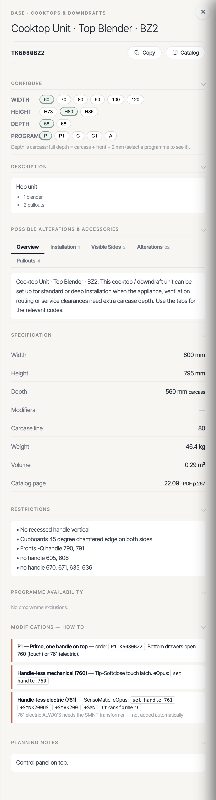

This guide uses real pictures of the LEICHT catalog app. For every part you can see and tap, it tells you in plain words what it does and which backend address (API) gives it the data.
Picture 1 · The top of the screen
This strip sits at the very top. It shows the catalog totals, lets you pick a kitchen line (a "programme"), and lets you filter by size.

1 2 3 4| Part | What it does | API address |
|---|---|---|
| 1Item count | Shows how many items and programmes are in the catalog right now. | GET/stats |
| 2Programme picker | Pick a kitchen line. This changes prices and what is available. Also feeds Mix and ANTOSO. | GET/programs |
| 3Width buttons (W) | Tap a width to show only items of that width. "All" shows every width. | GET/cards · ?widthCm=60 |
| 4Height & Depth (H · D) | Height filters the grid the same way as width. Depth is not a grid filter — it is chosen per item and sent to /resolve. |
GET/cards · ?heightCm |
Picture 2 · The left menu
The left menu is the list of catalog areas (Base, Tall, Wall…). Each line shows how many products are inside. Tapping a line filters the middle of the screen.

1 2| Part | What it does | API address |
|---|---|---|
| 1Category + count | A top area like "Base" with the number of products in it. Tap it to show only that area. | GET/categories |
| 2Sub-menu line | A smaller group inside the area, like "Sinks" or "Cooktops". Tap to narrow further. | GET/categories · ?subcategory |
Picture 3 · One product tile
The middle of the screen is a grid of tiles. Each tile is one product. It shows a name, a badge, size buttons, and small round programme buttons. Tapping a size or programme button jumps to the exact order code.

1 2 3 4| Part | What it does | API address |
|---|---|---|
| 1Group name | The name of the product family, like "Cooktop Unit". | GET/cards · cardName |
| 2Programme badge | Shows which lines it fits: ALL, or P · C, or one letter. We work this out from the tiers. |
GET/cards · programmeBadge |
| 3Size buttons (H·W·D) | The blue button is the chosen size. Tap another to switch. Each one points to a real order code. | GET/resolve · ?cardId&widthCm (see below) |
| 4Programme dots | The round P · P1 · C · C1 · A buttons. P/C/A are the base lines. P1/C1 are the one-handle "plus" options. | GET/resolve · ?tierCode=P1 |
Picture 3 · Close-up on the buttons
/resolve in fullThe size buttons ③ and programme dots ④ on the card do not carry the final order
code themselves. When you tap one, the app asks /resolve: "for this card, with this
width / height / depth / programme, what is the real order code?" It sends the matching code back,
and the app opens that code.
You give it the cardId plus any mix of the values you have chosen so far. Every value you send must match a real item exactly (same width, same tier, and so on). Send one value, or send them all — more values means a narrower, more exact answer.
| Parameter (exact name) | Type | Need it? | What it means |
|---|---|---|---|
| cardId | text | Yes | Which product card. The family the button lives on. Always required. |
| widthCm | number | no | Width in cm, like 80. Comes from the W buttons. |
| heightCm | number | no | Height in cm. Comes from the H buttons. |
| depthCm | number | no | Depth (carcass) in cm. Comes from the D buttons. |
| tierCode | text | no | The programme dot: base lines P C A, or premium P1 C1 (see box below). |
| variantKey | text | no | Only for cards whose selector is a named variant, not a size. Skip it for normal size cards. |
Example — you tapped the 80 cm width button, on the P line, on a cooktop card:
null if nothing matched.
matchCount — how many items fit your choice.
matches — the short record of each fitting item (heavy fields removed).
The app takes resolved and opens its detail page with
GET/detail/:sku.
cardId), matchCount is greater than 1 and resolved is simply the first
match. Add more values (width, then tier…) to narrow it down to exactly one code.
tierCode=P1 or C1, the API finds the flagged base for your size and builds the
premium order code by adding the prefix: base TK6080BZ2 → P1TK6080BZ2. In the
answer these show synthesized: true. That made-up code then opens normally with
GET/detail/:sku and
GET/items/:sku — the
detail is built from the base with the premium construction and code on top (same base-line book price).
If a size has no flagged base, matchCount is 0 and the dot is greyed out.
Picture 4 · The detail page
Tapping a tile slides open the full detail page. One API call fills this whole page: GET/detail/:sku. Each block below is one piece of that answer.

1 2 3 4 5 6 7 8 9| Block | What it shows | Comes from (in the answer) |
|---|---|---|
| 1Title & code | Area, name, and the order code (like TK6080BZ2). | header |
| 2Configure buttons | Change width, height, depth, or programme. Each choice is already linked to its order code. | configure |
| 3Description | Short bullet points about the item. | description |
| 4Alterations tabs | Tabs of extra parts you can add (Installation, Visible Sides, Alterations, Pullouts) with counts. | alterations |
| 5Specification | Sizes in mm, weight, volume, and the catalog page. Weight and volume are worked out for you. | specification |
| 6Restrictions | Rules to keep in mind (for example, no vertical recessed handle). | restrictions |
| 7Programme availability | Which programmes this item is sold in. Empty means it is sold in all of them. | programmeAvailability |
| 8Modifications — how to | Recipes to change the item: the "plus" P1/C1 code, and handle-less 760 / 761 with their part codes. | modifications |
| 9Planning notes | Extra planning advice (for example, "Control panel on top"). | planningNotes |
pricing (book prices per programme),
catalog (the Catalog-button PDF — see below) and clickNote. The app shows price
in a separate Pricing screen, not here.
P1TK6080BZ2 is not stored, but
this page still opens it: the API builds the detail from the base item and adds the premium construction
on top. The header then shows tierCode: "P1", premium: true and the
baseSku it came from.
catalog:
url — the ready-to-open PDF link for this item, already pointing at the right book and page
(e.g. …/1.+PRIMO-2026+267.pdf) — plus page, pricesHidden: true,
priceCrop (how much of the width to keep), and a books list (Primo for P/P1,
Avance · Contino for A/C/C1, each with its own url + urlTemplate for prev/next).
To show it: load catalog.url with pdf.js, draw page 1 to a canvas, and keep the left
priceCrop (0.585) of the width — that hides the price column. If an item has no catalog page,
catalog.available is false.
The catalog object, field by field:
| Field | What it is |
|---|---|
| available | true if this item has a catalog page. When false, hide the Catalog button. |
| url | The PDF link to open. Already the right book and page for this item — open it as-is. |
| page | The page number (e.g. 267). Show it in the footer ("p. 267"). |
| bookId | Which book was picked: primo or ac. |
| pricesHidden | Always true — show the "Prices hidden" label. |
| priceCrop | 0.585. Keep this much of the width (left side); the rest is the price column and is cut off. |
| books[] | Both books. Each has url (this page) and urlTemplate. Use this to switch the book when the user changes programme. |
| urlTemplate | Link with a {page} hole. For prev/next, put the next page number in — a missing page (404) means the end of the book. |
catalog.url, or for the selected programme
books.find(b => b.tiers.includes(tier)).url.
2. Load it with pdf.js and draw page 1 onto a canvas.
3. Keep only the left priceCrop of the width (that removes the price column).
4. Put the "planning view · p.N" watermark and "Prices hidden" label on top.
5. For prev/next, load the neighbour page from urlTemplate.
Reference
Every address the app can use. All of them need a login token.
| Address | What it gives | Used by |
|---|---|---|
| POST/ingest | Upload a new catalog file. Items missing from the file are turned off. | Data upload |
| GET/cards | The grid of product tiles, grouped and with badges. | Middle grid |
| GET/cards/:cardId | Every version of one product. | Card details |
| GET/items | Search and list single codes. | Search & size filters |
| GET/items/:sku | Look up one order code. Premium P1/C1 codes are built from the base. | Code lookup |
| GET/detail/:sku | The full detail page (Picture 4). Also accepts premium P1/C1 codes (built from the base). | Detail page |
| GET/resolve | Turn a size/programme choice into the right order code. Params: cardId (required) + widthCm heightCm depthCm tierCode variantKey. Premium P1/C1 return a synthesized code. | Every size/programme button |
| GET/programs | The list of kitchen lines. | Programme picker |
| GET/categories | The left menu tree with counts. | Left menu |
| GET/meta | Shared rules: prices, handle recipes, ANTOSO. | Prices & rules |
| GET/stats | The catalog totals. | Top bar count |